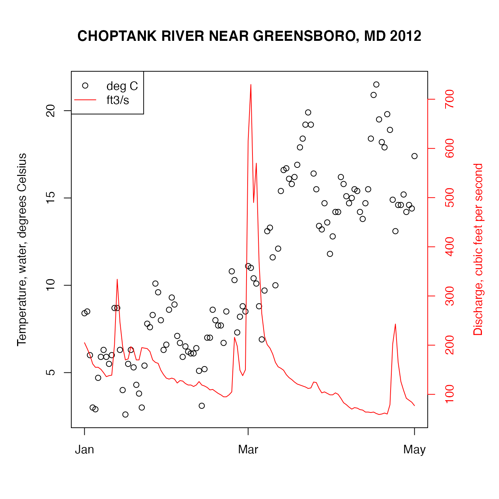

Introduction to the dataRetrieval package
Laura A. DeCicco and Robert M. Hirsch
03 January, 2023
Source:vignettes/dataRetrieval.Rmd
dataRetrieval.RmdThe dataRetrieval package was created to simplify the
process of loading hydrologic data into the R environment. It is
designed to retrieve the major data types of U.S. Geological Survey
(USGS) hydrologic data that are available on the Web, as well as data
from the Water Quality Portal (WQP), which currently houses water
quality data from the Environmental Protection Agency (EPA), U.S.
Department of Agriculture (USDA), and USGS. Direct USGS data is obtained
from a service called the National Water Information System (NWIS).
For information on getting started in R and installing the package, see Getting Started. Any use of trade, firm, or product names is for descriptive purposes only and does not imply endorsement by the U.S. Government.
A quick workflow for USGS dataRetrieval functions:
library(dataRetrieval)
# Choptank River near Greensboro, MD
siteNumber <- "01491000"
ChoptankInfo <- readNWISsite(siteNumber)
parameterCd <- "00060"
# Raw daily data:
rawDailyData <- readNWISdv(
siteNumber, parameterCd,
"1980-01-01", "2010-01-01"
)
# Sample data Nitrate:
parameterCd <- "00618"
qwData <- readNWISqw(
siteNumber, parameterCd,
"1980-01-01", "2010-01-01"
)
pCode <- readNWISpCode(parameterCd)USGS data are made available through the National Water Information System (NWIS).
Table 1 describes the functions available in the
dataRetrieval package.
| Name | Data.Returned | siteNumbers | parameterCd | startDate…endDate | Arguments | Source |
|---|---|---|---|---|---|---|
| readNWISdata | Data using user-specified queries | opt. | opt. | opt. | service, tz=‘UTC’, … | NWIS |
| readNWISdv | Daily values | req. | req. | req. | statCd=‘00003’ | NWIS |
| readNWISqw | Water quality | req. | req. | req. | expanded=TRUE, tz=‘UTC’ | NWIS |
| readNWISuv | Instantaneous values | req. | req. | req. | tz=‘UTC’ | NWIS |
| readNWISrating | Rating table for active streamgage | req. | type=’base | NWIS | ||
| readNWISmeas | Surface-water measurements | req. | req. | tz=‘UTC’ | NWIS | |
| readNWISpeak | Peak flow | req. | req. | NWIS | ||
| readNWISgwl | Groundwater levels | req. | req. | tz=‘UTC’ | NWIS | |
| readNWISuse | Water use | stateCd, countyCd, years=‘ALL’, categories=‘ALL’ | NWIS | |||
| readNWISstat | Statistical service | req. | req. | req. | statReportType=‘daily’, statType=‘mean’ | NWIS |
| readNWISpCode | Parameter code information | req. | req. | NWIS | ||
| readNWISsite | Site information | req. | NWIS | |||
| whatNWISsites | Site search using user-specified queries | req. | … | NWIS | ||
| whatNWISdata | Data availability | opt. | opt. | service, … | NWIS | |
| readWQPdata | User-specified queries | opt. | opt. | … | WQP | |
| readWQPqw | Water quality data | req. | req. | req. | WQP | |
| whatWQPsites | Site search | opt. | opt. | … | WQP | |
| whatWQPdata | Data availability | opt. | opt. | … | WQP | |
| readWQPsummary | Summary data | opt. | opt. | … | WQP | |
| whatWQPmetrics | Metric availability | opt. | opt. | … | WQP | |
| whatWQPsamples | Sample availability | opt. | opt. | … | WQP |
The arguments startDate and endDate have
defaults to request the maximum data.
USGS Web Retrievals
In this section, examples of National Water Information System (NWIS) retrievals show how to get raw data into R. This data includes site information, measured parameter information, historical daily values, unit values (which include real-time data but can also include other sensor data stored at regular time intervals), water quality data, groundwater level data, peak flow data, rating curve data, surface-water measurement data, water use data, and statistics data. The section Embedded Metadata shows instructions for getting metadata that is attached to each returned data frame.
The USGS organizes hydrologic data in a standard structure.
Streamgages are located throughout the United States, and each
streamgage has a unique ID (referred in this document and throughout the
dataRetrieval package as siteNumber). Often
(but not always), these ID’s are 8 digits for surface-water sites and 15
digits for groundwater sites. The first step to finding data is
discovering this siteNumber. There are many ways to do
this, one is the National Water
Information System: Mapper.
Once the siteNumber is known, the next required input
for USGS data retrievals is the “parameter code”. This is a 5-digit code
that specifies the measured parameter being requested. For example,
parameter code 00631 represents “Nitrate plus nitrite, water, filtered,
milligrams per liter as nitrogen”, with units of “mg/l as N”.
Not every station will measure all parameters. A short list of commonly measured parameters is shown in Table 2.
| pCode | shortName |
|---|---|
| 00060 | Discharge [ft3/s] |
| 00065 | Gage height [ft] |
| 00010 | Temperature [C] |
| 00045 | Precipitation [in] |
| 00400 | pH |
Two output columns that may not be obvious are “srsname” and “casrn”. Srsname stands for “Substance Registry Services”. More information on the srs name can be found here.
Casrn stands for “Chemical Abstracts Service (CAS) Registry Number”. More information on CAS can be found here.
For unit values data (sensor data measured at regular time intervals
such as 15 minutes or hourly), knowing the parameter code and
siteNumber is enough to make a request for data. For most
variables that are measured on a continuous basis, the USGS also stores
the historical data as daily values. These daily values are statistical
summaries of the continuous data, e.g. maximum, minimum, mean, or
median. The different statistics are specified by a 5-digit statistics
code.
Some common codes are shown in Table 3.
| StatCode | shortName |
|---|---|
| 00001 | Maximum |
| 00002 | Minimum |
| 00003 | Mean |
| 00008 | Median |
Examples for using these site numbers, parameter codes, and statistic codes will be presented in subsequent sections.
There are occasions where NWIS values are not reported as numbers,
instead there might be text describing a certain event such as “Ice”.
Any value that cannot be converted to a number will be reported as NA in
this package (not including remark code columns), unless the user sets
an argument convertType to FALSE. In that
case, the data is returned as a data frame that is entirely character
columns.
Site Information
readNWISsite
Use the readNWISsite function to obtain all of the
information available for a particular USGS site (or sites) such as full
station name, drainage area, latitude, and longitude.
readNWISsite can also access information about multiple
sites with a vector input.
siteNumbers <- c("01491000", "01645000")
siteINFO <- readNWISsite(siteNumbers)Site information is obtained from: https://waterservices.usgs.gov/rest/Site-Test-Tool.html
Information on the returned data can be found with the
comment function as described in the Metadata section.
comment(siteINFO)whatNWISdata
To discover what data is available for a particular USGS site,
including measured parameters, period of record, and number of samples
(count), use the whatNWISdata function. It is possible to
limit the retrieval information to a subset of services. The possible
choices for services are: “dv” (daily values), “uv”, or “iv” (unit
values), “qw” (water-quality), “sv” (sites visits), “pk” (peak
measurements), “gw” (groundwater levels), “ad” (sites included in USGS
Annual Water Data Reports External Link), “aw” (sites monitored by the
USGS Active Groundwater Level Network External Link), and “id”
(historical instantaneous values).
In the following example, we limit the retrieved data to only daily
data. The default for “service” is all, which returns all
of the available data for that site. Likewise, there are arguments for
parameter code (parameterCd) and statistic code
(statCd) to filter the results. The default for both is to
return all possible values (all). The returned
count_nu for “uv” data is the count of days with returned
data, not the actual count of returned values.
# Continuing from the previous example:
# This pulls out just the daily, mean data:
dailyDataAvailable <- whatNWISdata(
siteNumber = siteNumbers,
service = "dv",
statCd = "00003"
)| siteNumbers | srsname | startDate | endDate | count | units |
|---|---|---|---|---|---|
| 01491000 | Temperature, water | 2010-10-01 | 2012-05-09 | 529 | deg C |
| 01491000 | Stream flow, mean daily | 1948-01-01 | 2017-05-17 | 25340 | ft3/s |
| 01645000 | Stream flow, mean daily | 1930-09-26 | 2017-05-17 | 31646 | ft3/s |
| 01491000 | Specific conductance | 2010-10-01 | 2012-05-09 | 527 | uS/cm @25C |
| 01491000 | Suspended sediment concentration (SSC) | 1980-10-01 | 1991-09-30 | 4017 | mg/l |
| 01491000 | Suspended sediment discharge | 1980-10-01 | 1991-09-30 | 4017 | tons/day |
See Creating Tables for instructions on converting an R data frame to a table in Microsoft® software Excel or Word to display a data availability table similar to Table 4. Excel, Microsoft, PowerPoint, Windows, and Word are registered trademarks of Microsoft Corporation in the United States and other countries.
Parameter Information
To obtain all of the available information concerning a measured
parameter (or multiple parameters), use the readNWISpCode
function:
# Using defaults:
parameterCd <- "00618"
parameterINFO <- readNWISpCode(parameterCd)Daily Data
To obtain daily records of USGS data, use the readNWISdv
function. The arguments for this function are siteNumbers,
parameterCd, startDate, endDate,
and statCd (defaults to “00003”). If you want to use the
default values, you do not need to list them in the function call. Daily
data is pulled from https://waterservices.usgs.gov/rest/DV-Test-Tool.html.
The dates (start and end) must be in the format “YYYY-MM-DD” (note: the user must include the quotes). Setting the start date to “” (no space) will prompt the program to ask for the earliest date, and setting the end date to “” (no space) will prompt for the latest available date.
# Choptank River near Greensboro, MD:
siteNumber <- "01491000"
parameterCd <- "00060" # Discharge
startDate <- "2009-10-01"
endDate <- "2012-09-30"
discharge <- readNWISdv(siteNumber, parameterCd, startDate, endDate)The column “datetime” in the returned data frame is automatically imported as a variable of class “Date” in R. Each requested parameter has a value and remark code column. The names of these columns depend on the requested parameter and stat code combinations. USGS daily value qualification codes are often “A” (approved for publication) or “P” (provisional data subject to revision).
Another example would be a request for mean and maximum daily temperature and discharge in early 2012:
siteNumber <- "01491000"
parameterCd <- c("00010", "00060") # Temperature and discharge
statCd <- c("00001", "00003") # Mean and maximum
startDate <- "2012-01-01"
endDate <- "2012-05-01"
temperatureAndFlow <- readNWISdv(siteNumber, parameterCd,
startDate, endDate,
statCd = statCd
)The column names can be shortened and simplified using the
renameNWISColumns function. This is not necessary, but may
streamline subsequent data analysis and presentation. Site information,
daily statistic information, and measured parameter information is
attached to the data frame as attributes. This is discussed further in
the metadata section.
names(temperatureAndFlow)## [1] "agency_cd" "site_no" "Date"
## [4] "X_00010_00001_cd" "X_00010_00001" "X_00010_00003_cd"
## [7] "X_00010_00003" "X_00060_00003_cd" "X_00060_00003"
temperatureAndFlow <- renameNWISColumns(temperatureAndFlow)
names(temperatureAndFlow)## [1] "agency_cd" "site_no" "Date"
## [4] "Wtemp_Max_cd" "Wtemp_Max" "Wtemp_cd"
## [7] "Wtemp" "Flow_cd" "Flow"
# Information about the data frame attributes:
names(attributes(temperatureAndFlow))## [1] "names" "row.names" "url"
## [4] "siteInfo" "variableInfo" "disclaimer"
## [7] "statisticInfo" "queryTime" "class"
statInfo <- attr(temperatureAndFlow, "statisticInfo")
variableInfo <- attr(temperatureAndFlow, "variableInfo")
siteInfo <- attr(temperatureAndFlow, "siteInfo")An example of plotting the above data:
variableInfo <- attr(temperatureAndFlow, "variableInfo")
siteInfo <- attr(temperatureAndFlow, "siteInfo")
par(mar = c(5, 5, 5, 5)) # sets the size of the plot window
plot(temperatureAndFlow$Date, temperatureAndFlow$Wtemp_Max,
ylab = variableInfo$parameter_desc[1],
xlab = ""
)
par(new = TRUE)
plot(temperatureAndFlow$Date,
temperatureAndFlow$Flow,
col = "red", type = "l",
xaxt = "n", yaxt = "n",
xlab = "", ylab = "",
axes = FALSE
)
axis(4, col = "red", col.axis = "red")
mtext(variableInfo$parameter_desc[2], side = 4, line = 3, col = "red")
title(paste(siteInfo$station_nm, "2012"))
legend("topleft", variableInfo$param_units,
col = c("black", "red"), lty = c(NA, 1),
pch = c(1, NA)
)
Unit Data
Any data collected at regular time intervals (such as 15-minute or
hourly) are known as “unit values”. Many of these are delivered on a
real time basis and very recent data (even less than an hour old in many
cases) are available through the function readNWISuv. Some
of these unit values are available for many years, and some are only
available for a recent time period such as 120 days. Here is an example
of a retrieval of such data.
parameterCd <- "00060" # Discharge
startDate <- "2012-05-12"
endDate <- "2012-05-13"
dischargeUnit <- readNWISuv(siteNumber, parameterCd, startDate, endDate)
dischargeUnit <- renameNWISColumns(dischargeUnit)The retrieval produces a data frame that contains 96 rows (one for
every 15 minute period in the day). They include all data collected from
the startDate through the endDate (starting
and ending with midnight locally-collected time). The dateTime column is
converted to UTC (Coordinated Universal Time), so midnight EST will be 5
hours earlier in the dateTime column (the previous day, at 7pm).
To override the UTC timezone, specify a valid timezone in the tz argument. Default is ““, which will keep the dateTime column in UTC. Other valid timezones are:
America/New_York
America/Chicago
America/Denver
America/Los_Angeles
America/Anchorage
America/Honolulu
America/Jamaica
America/Managua
America/Phoenix
America/MetlakatlaData are retrieved from https://waterservices.usgs.gov/rest/IV-Test-Tool.html. There are occasions where NWIS values are not reported as numbers, instead a common example is “Ice”. Any value that cannot be converted to a number will be reported as NA in this package. Site information and measured parameter information is attached to the data frame as attributes. This is discussed further in metadata section.
Groundwater Level Data
Groundwater level measurements can be obtained with the
readNWISgwl function. Information on the returned data can
be found with the comment function, and attached attributes
as described in the metadata
section.
siteNumber <- "434400121275801"
groundWater <- readNWISgwl(siteNumber)Peak Flow Data
Peak flow data are instantaneous discharge or stage data that record
the maximum values of these variables during a flood event. They include
the annual peak flood event but can also include records of other peaks
that are lower than the annual maximum. Peak discharge measurements can
be obtained with the readNWISpeak function. Information on
the returned data can be found with the comment function
and attached attributes as described in the metadata section.
siteNumber <- "01594440"
peakData <- readNWISpeak(siteNumber)Rating Curve Data
Rating curves are the calibration curves that are used to convert
measurements of stage to discharge. Because of changing hydrologic
conditions these rating curves change over time. Information on the
returned data can be found with the comment function and
attached attributes as described in the metadata section.
Rating curves can be obtained with the readNWISrating
function.
ratingData <- readNWISrating(siteNumber, "base")
attr(ratingData, "RATING")Surface-Water Measurement Data
These data are the discrete measurements of discharge that are made
for the purpose of developing or revising the rating curve. Information
on the returned data can be found with the comment function
and attached attributes as described in the metadata section.
Surface-water measurement data can be obtained with the
readNWISmeas function.
surfaceData <- readNWISmeas(siteNumber)Water Use Data
Retrieves water use data from USGS Water Use Data for the Nation. See https://waterdata.usgs.gov/nwis/wu for more information. All available use categories for the supplied arguments are retrieved.
allegheny <- readNWISuse(
stateCd = "Pennsylvania",
countyCd = "Allegheny"
)
national <- readNWISuse(
stateCd = NULL,
countyCd = NULL,
transform = TRUE
)Statistics Data
Retrieves site statistics from the USGS Statistics Web Service beta.
discharge_stats <- readNWISstat(
siteNumbers = c("02319394"),
parameterCd = c("00060"),
statReportType = "annual"
)Water Quality Portal Web Retrievals
Water quality data sets available from the Water Quality Data Portal.
These data sets can be housed in either the STORET database (data from
EPA), NWIS database (data from USGS), STEWARDS database (data from
USDA), and additional databases are slated to be included in the future.
Because only USGS uses parameter codes, a “characteristic name” must be
supplied. The readWQPqw function can take either a USGS
parameter code, or a more general characteristic name in the parameterCd
input argument. The Water Quality Data Portal includes data discovery
tools and information on characteristic names. The following example
retrieves specific conductance from a DNR site in Wisconsin.
specificCond <- readWQPqw(
"WIDNR_WQX-10032762",
"Specific conductance",
"2011-05-01", "2011-09-30"
)Generalized Retrievals
The previous examples all took specific input arguments:
siteNumber, parameterCd (or characteristic
name), startDate, endDate, etc. However, the
Web services that supply the data can accept a wide variety of
additional arguments.
NWIS
Sites: whatNWISsites
The function whatNWISsites can be used to discover NWIS
sites based on any query that the NWIS Site Service offers. This is done
by using the ... argument, which allows the user to use any
arbitrary input argument. We can then use the service here
to discover many options for searching for NWIS sites. For example, you
may want to search for sites in a lat/lon bounding box, or only sites
tidal streams, or sites with water quality samples, sites above a
certain altitude, etc. The results of this site query generate a URL.
For example, the tool provided a search within a specified bounding box,
for sites that have daily discharge (parameter code = 00060) and
temperature (parameter code = 00010). The generated URL is:
The following dataRetrieval code can be used to get
those sites:
sites <- whatNWISsites(
bBox = c(-83.0, 36.5, -81.0, 38.5),
parameterCd = c("00010", "00060"),
hasDataTypeCd = "dv"
)Data: readNWISdata
For NWIS data, the function readNWISdata can be used.
The argument listed in the R help file is ... and
service (only for data requests). Table 5 describes the
services are available.
| Service | Description | URL |
|---|---|---|
| dv | Daily | https://waterservices.usgs.gov/rest/DV-Test-Tool.html |
| iv | Instantaneous | https://waterservices.usgs.gov/rest/IV-Test-Tool.html |
| gwlevels | Groundwater Levels | https://waterservices.usgs.gov/rest/GW-Levels-Test-Tool.html |
| qwdata | Water Quality | https://nwis.waterdata.usgs.gov/nwis/qwdata |
| measurements | Surface Water Measurements | https://waterdata.usgs.gov/nwis/measurements/ |
| peak | Peak Flow | https://nwis.waterdata.usgs.gov/usa/nwis/peak/ |
| stat | Statistics Service | https://waterservices.usgs.gov/rest/Statistics-Service-Test-Tool.html |
The ... argument allows the user to create their own
queries based on the instructions found in the web links above. The
links provide instructions on how to create a URL to request data.
Perhaps you want sites only in Wisconsin, with a drainage area less than
50 mi2, and the most recent daily discharge data. That
request would be done as follows:
dischargeWI <- readNWISdata(
service = "dv",
stateCd = "WI",
parameterCd = "00060",
drainAreaMin = "50",
statCd = "00003"
)
siteInfo <- attr(dischargeWI, "siteInfo")WQP
Just as with NWIS, the Water Quality Portal (WQP) offers a variety of ways to search for sites and request data. The possible Web service arguments for WQP site searches is found here.
Sites: whatWQPsites
To discover available sites in the WQP in New Jersey that have
measured Chloride, use the function whatWQPsites.
sitesNJ <- whatWQPsites(
statecode = "US:34",
characteristicName = "Chloride"
)Data: readWQPdata
To get data from the WQP using generalized Web service calls, use the
function readWQPdata. For example, to get all the pH data
in Wisconsin:
dataPH <- readWQPdata(
statecode = "US:55",
characteristicName = "pH"
)Availability: whatWQPdata
The function whatWQPdata returns a data frame with
information on the amount of data collected at a site. For example:
type <- "Stream"
sites <- whatWQPdata(countycode = "US:55:025", siteType = type)This returns a data frame with all of the sites that were measured in
streams in Dane County, WI. Also, in that table, there is a measure of
activityCount (how often the site was sampled), and
resultCount (how many individual results are
available).
Samples: whatWQPsamples
The function whatWQPsamples returns information on the
individual samples collected at a site. For example:
site <- whatWQPsamples(siteid = "USGS-01594440")This returns one row for each instance that a sample was collect.
Metrics: whatWQPmetrics
The function whatWQPmetrics provides metric information.
This is only currently available for STORET data:
type <- "Stream"
sites <- whatWQPmetrics(countycode = "US:55:025", siteType = type)Embedded Metadata
All data frames returned from the Web services have some form of
associated metadata. This information is included as attributes to the
data frame. All data frames will have a url (returning a
character of the url used to obtain the data), siteInfo
(returning a data frame with information on sites), and
queryTime (returning a POSIXct datetime) attributes. For
example, the url and query time used to obtain the data can be found as
follows:
Depending on the format that the data was obtained (RDB, WaterML1, etc), there will be additional information embedded in the data frame as attributes. To discover the available attributes:
names(attributes(dischargeWI))For data obtained from readNWISuv,
readNWISdv, readNWISgwl there are two
attributes that are particularly useful: siteInfo and
variableInfo.
Data obtained from readNWISpeak,
readNWISmeas, and readNWISrating, the
comment attribute is useful.
Getting Started in R
This section describes the options for downloading and installing the
dataRetrieval package.
New to R?
If you are new to R, you will need to first install the latest version of R, which can be found [here] (www.R-project.org).
At any time, you can get information about any function in R by typing a question mark before the functions name. This will open a file (in RStudio, in the Help window) that describes the function, the required arguments, and provides working examples. This will open a help file similar to the image below. To see the raw code for a particular code, type the name of the function, without parentheses.
?readNWISpCodeA simple R help file
Additionally, many R packages have vignette files attached (such as this paper). To view the vignette:
vignette(topic = "Introduction", package = "dataRetrieval")Disclaimer
This information is preliminary and is subject to revision. It is being provided to meet the need for timely best science. The information is provided on the condition that neither the U.S. Geological Survey nor the U.S. Government may be held liable for any damages resulting from the authorized or unauthorized use of the information.